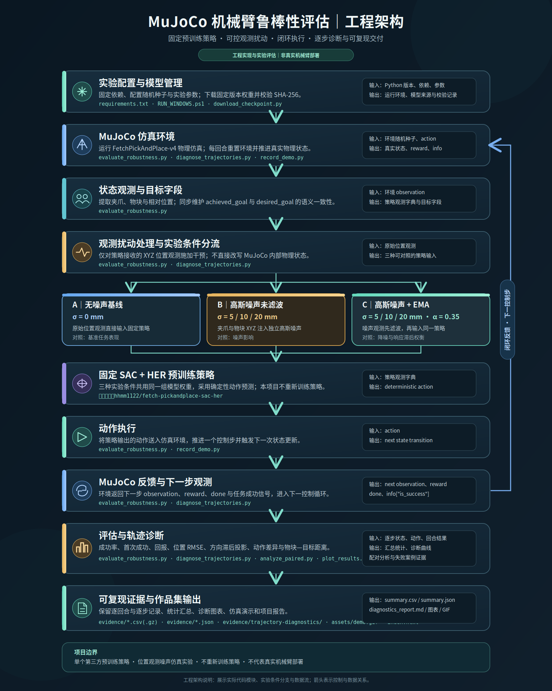
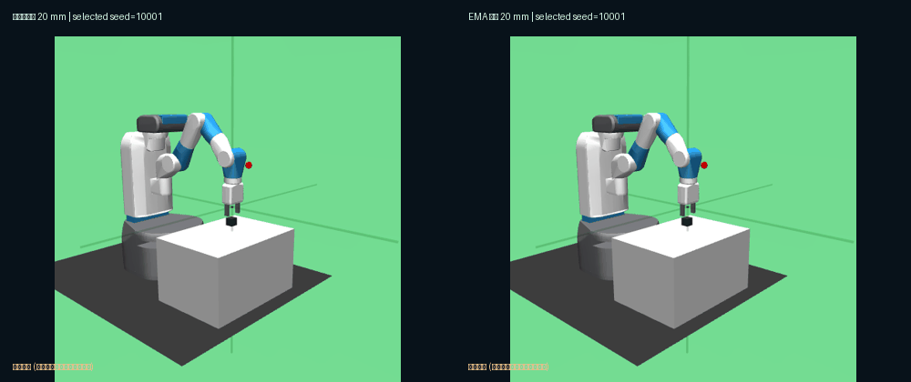

让机械臂在
不确定观测下
可靠抓取。
基于 MuJoCo FetchPickAndPlace 的 SAC + HER 策略，构建位置观测噪声评估、EMA 滤波对照与可复现实验流水线。关注的不只是“能否成功”，还有策略在误差下如何失败。
高成功率，不等于强鲁棒性。
原开源项目提供 FetchPickAndPlace SAC + HER 预训练策略，并报告其干净环境下的评估成功率。但真实应用存在位置测量误差。我们先固定原策略，在不重新训练的条件下检验策略是否对噪声敏感。
噪声敏感性
随着观测 XYZ 误差增大，机械臂的任务成功率是否下降？变化幅度有多大？
失败定位
失败主要发生在接近、抓取、抬升还是放置阶段？指标定义能否揭示误判？
简单干预的价值
指数移动平均（EMA）能否降低噪声影响？它带来的响应延迟又会造成什么代价？
从实验配置到闭环执行与证据归档。
下图按仓库中的实际代码模块展示输入输出关系。三种观测条件分别运行同一固定策略；MuJoCo 负责真实物理状态推进，评估模块负责记录与分析，不将观测干预误写成物理环境扰动。


无噪声基线
无额外观测误差的原始环境，作为复现基线。
σ = 0 mm未滤波观测
分别对末端与物块 XYZ 注入独立高斯误差，避免坐标泄漏。
σ ∈ {5, 10, 20} mmEMA 滤波
对位置观测实施平滑，并记录滤波引入的响应延迟与可能损失。
α = 0.35 · 固定参数，未在正式评估集上调参实验数据仪表盘
本页面只展示可追溯到逐回合 CSV 和 summary.json 的真实仿真数据，不生成假数据。默认显示独立30种子评估；导入运行脚本生成的 summary.json 可替换显示其他真实结果。
默认展示本仓库 evidence/ 中归档的30种子、7条件、共210回合真实 MuJoCo 评估。仍属单个预训练策略的仿真实验，不等于泛化结论；可导入新 summary.json，文件只在本地读取。
当前没有加载有效的结果文件；默认内嵌已归档的210回合仿真，数据如未出现请刷新页面。
输入：evaluate_robustness.py 输出的 results/eval100/summary.json
各条件成功率
| 方法 | 位置误差 | 回合数 | 成功率 | Wilson 95% 置信区间（当前指标） |
|---|
观测误差与闭环轨迹诊断
逐步记录夹爪、物块的真实位置、受噪声污染的位置、策略实际接收的位置与执行动作。图表用于解释 EMA 的噪声抑制和时间滞后权衡，不替代 210 回合总体评估。


相同随机种子下的仿真动作对比。
20 mm 高斯位置噪声、初始种子 10001，MuJoCo 仿真运行 50 步。未滤波 SAC 最终失败；加入 EMA 的同一预训练策略在第37步首次成功、最终成功。为确保评估忠实，绘图使用独立渲染环境；结果与批量评估中的该种子一致。
左右双画面 GIF · 未滤波策略（20 mm）与 EMA 策略（20 mm）
本仓库未上传第三方训练权重，也没有把经过挑选的演示轨迹当成总体成功率。MuJoCo 仿真 GIF、逐案例 JSON 和模型 SHA-256 已归档在本仓库 assets/ 与 evidence/，详见演示报告。


哪些是已有成果，哪些是我的工作？
个人新增模块
位置噪声注入、相对坐标一致性处理、EMA 滤波、配对环境种子、多指标统计、输出 CSV/JSON、基础单元测试和本作品集仪表盘。代码与独立实验均已完成；具体结果见实验报告。
项目当前状态与下一步工作。
云端环境验收
GitHub Linux 环境已成功加载固定模型并完成真实 MuJoCo 评估；Windows 本机运行仍待验收。
独立实验
已完成 30 个环境随机种子、7 组条件、共 210 回合对照，并归档逐回合数据。
轨迹诊断与机制分析
已完成逐步轨迹诊断：位置 RMSE、方向滞后投影、动作差异与物块—目标距离。初步观察到 EMA 的噪声抑制与响应滞后权衡；因果机制尚未通过独立干预实验确认。
仿真演示与网站
云端 MuJoCo 对照 GIF 已生成并公开；Windows 本机演示与 GitHub Pages 部署尚未完成。